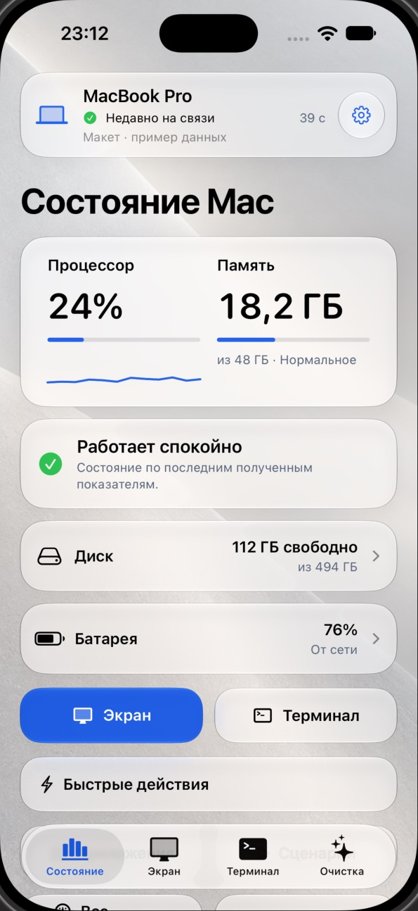
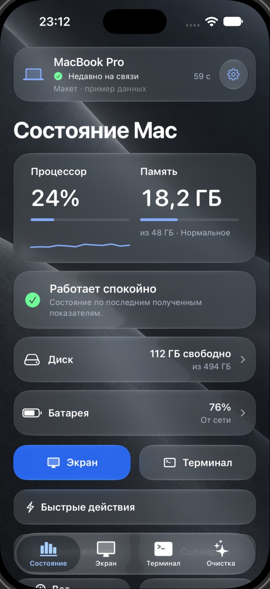

Your Mac.
Your iCloud.
Check and control your Mac from your iPhone. Readings and commands stay in your private iCloud.
iPhone + Mac · Same iCloud account


Your data stays yours.
MacReport uses your private iCloud database. The developer doesn’t receive your Mac’s readings, commands or requested screen images.
Live screen and input use a separate encrypted connection. Nearby control stays on your local network.
Privacy detailsStatus, screen and control.
Check on your Mac
Battery, CPU, memory and storage. Seven days of readings, plus widgets and Apple Watch.
See the screen
Live viewing or a requested image. Mouse and keyboard control only when you allow it on your Mac.
Quick actions
Lock your Mac, open an app, change brightness or set a keep-awake timer. Review files before cleanup.
A trackpad nearby
Use your iPhone as a trackpad and keyboard while looking at your Mac. Pair once through iCloud.
Questions
What do I need?
iOS 17 or later and macOS 14 or later, with the same iCloud account. Install the iPhone app through TestFlight and the signed Mac agent. Enable screen viewing and control separately on your Mac.
Does my Mac need to be awake?
Yes. It must be awake, online and running the agent. MacReport cannot remotely unlock macOS or answer password prompts.
Does Live work on every network?
Some networks block direct connections. You can configure your own TURN relay or request screen images through iCloud. Live has no audio. Viewing stops when your Mac locks or sleeps.
What happens during cleanup?
You choose the files and confirm. Moving them to recovery does not free space; permanent deletion needs a separate confirmation. Personal files are never selected automatically.
Where does my waitlist email go?
Your email is stored in Cloudflare D1 through OpenAI Sites, separately from iCloud. Oleg Yakushin can view and export the list to send invitations manually. The form does not send an automatic email.
To remove your address, email hello@olegotka.es.
Try MacReport.
Leave your email for a testing invitation.
Invitations are sent manually. Joining doesn’t grant access yet.
Already invited?
Install after receiving your iPhone invitation.
Download the Mac agentVersion 0.8.1 (33) · Developer ID signed and notarized.